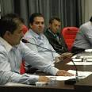
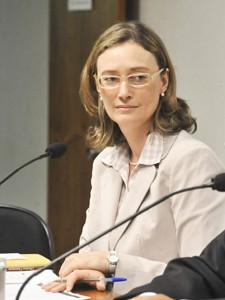

Governo
Governo prepara ampla reforma do PIS/Cofins
Fonte: http://www.dgabc.com.br/News/ Data: 14/11/2012
O secretário de Acompanhamento Econômico do Ministério da Fazenda, Antonio Henrique Silveira, afirmou nesta quarta-feira que o governo está empenhado em fazer uma ampla reforma do PIS/Cofins. Essa foi a razão pela qual o governo optou por não mexer nessas contribuições na Medida Provisória 579, que prorroga as concessões do setor elétrico e reduz alguns dos encargos que oneram a conta de luz.
"O governo está empenhado, e o Ministério da Fazenda em particular, em apresentar uma reforma do PIS/Cofins", afirmou, durante audiência pública da MP 579 no Congresso. "Por conta disso, introduzir a questão do PIS/Cofins nessa medida específica poderia contaminar, ou melhor, ser frustrado depois por um projeto de lei que trate o PIS/Cofins de forma mais sistêmica." O secretário não deu um prazo para quando os pontos da reforma serão apresentados.
O secretário disse que a questão do PIS/Cofins está sendo tratada em outro fórum. Ele afirmou ainda que os esforços do governo ao eliminar encargos na MP 579 terão mais efeito para o consumidor. "A completa eliminação do PIS/Cofins não teria o mesmo impacto que a redução dos encargos."
Governo federal organiza vistoria para investigar penitenciária de SC
Fonte: http://g1.globo.com/ Data: 19/11/2012

O Departamento Penitenciário Nacional do Ministério da Justiça e a Secretaria de Direitos Humanos da Presidência da República organizam uma vistoria para apurar denúncias de tortura na Penitenciária de São Pedro de Alcântara, na Grande Florianópolis. A vistoria está prevista para iniciar nesta segunda-feira (19).
(Correção: O G1 errou ao informar, às 7h21, que o governo federal faria uma força-tarefa para investigar a Penitenciária de São Pedro de Alcântara, em Santa Catarina. O Departamento de Administração Prisional e o Ministério da Justiça informaram que se trata de uma vistoria no local. A reportagem foi corrigida às 11h37).
Em Santa Catarina, órgãos de segurança confirmam que a principal linha de investigação trabalha com a hipótese de que os ataques a ônibus e forças da segurança que ocorrem desde segunda-feira (12) estão relacionados aos presídios do estado e às denúncias de maus-tratos. "Os atentados são uma reação dos criminosos não apenas por causa deste fator. Trata-se de um conjunto de circunstâncias, que inclui uma maior rigidez na segurança", afirmou o delegado geral da Polícia Civil, Aldo Pinheiro. Ainda segundo ele, a investigação aponta que há um grupo de presidiários que mantém contato com o exterior e coordenou os ataques. "Mas não podemos detalhar para não atrapalhar as investigações", explicou o delegado.
Na quinta-feira (15), o Ministério Público de Santa Catarina havia montado uma força-tarefa para ouvir os presos da Penitenciária de São Pedro de Alcântara. Segundo o MP, a força-tarefa ouviu, fotografou e examinou 69 presos em dois dias. As imagens das câmeras de segurança da penitenciária também foram capturadas para colaborar com as investigações.
Desde a semana passada, mais de 50 ações criminosas foram registradas, 48 pessoas foram detidas e três suspeitos morreram em confronto com a polícia no estado.
De acordo com a ministra dos Direitos Humanos, Maria do Rosário, "maus-tratos, violências existentes dentro dos presídios acabam repercutindo também em violências do lado de fora".
Nesta segunda (19), também ocorre uma reunião para definir o cronograma de ações e os estados a serem visitados pelos agentes do governo federal. Outra iniciativa será pressionar a Câmera dos Deputados para que seja aprovado ainda este ano o sistema nacional de prevenção e combate à tortura. O projeto dá autonomia para que peritos vistoriem as penitenciárias sem aviso prévio.
Voltar